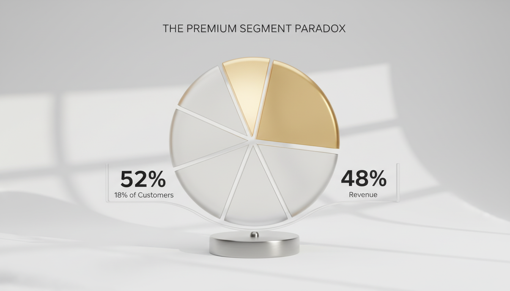

The Automation
of Strategy
Moving Beyond Dashboards to Decision Engines. Transform reactive BI into proactive decision engines. Learn how an automated framework identifies growth patterns, reduces churn, and optimizes operations.
In the modern enterprise, the challenge is no longer a lack of data, but an overwhelming surplus of it. Traditional Business Intelligence (BI) has historically functioned as a rearview mirror, providing retrospective reports that tell leaders what happened yesterday without explaining why.
The transition to an Automated Business Intelligence and Insight Investigation Framework represents a fundamental shift. By integrating sophisticated statistical rigor with automated discovery workflows, businesses can now identify hidden patterns—such as the 'Premium Segment Paradox' or the '45-day churn trigger'—before they impact the bottom line.
Decision Engine Active
The Evolution of Intelligence
The core of the Framework is its ability to move beyond the aesthetic appeal of dashboards into the realm of actionable intelligence.
While traditional BI tools require manual exploration, this system utilizes automated discovery tools to scan datasets for statistical anomalies. By employing an ensemble modeling approach—combining ARIMA, Prophet, and Linear models—the system transitions the organization from descriptive analytics to predictive business analytics, achieving a Mean Absolute Percentage Error (MAPE) as low as 4.2%.
The Premium Segment Paradox
Automated revenue growth analysis often reveals that a disproportionately small percentage of the customer base—approximately 18%—drives more than half of the total revenue (52%).
This insight allows organizations to pivot their marketing and acquisition strategies toward high-value segments rather than chasing volume alone. Furthermore, the Framework tracks the LTV:CAC ratio with surgical precision, identifying an exceptional 9.4:1 ratio in top-performing cohorts.

Customer Behavior Intelligence
Understanding customer behavior is the cornerstone of sustainable growth. The Framework identifies leading indicators of churn, most notably the '45-day inactivity' threshold. There is a documented 0.89 correlation between usage frequency and retention.
By flagging customers who have not engaged with the product within this window, the system enables proactive intervention strategies.
Operational Efficiency: The 78% Capacity Benchmark
Scaling a business requires a delicate balance between throughput and quality. Research suggests that an optimal capacity utilization rate is approximately 78%.
Pushing beyond this limit often leads to diminishing returns. By monitoring cycle times and process bottlenecks, the system has demonstrated the ability to drive efficiency improvements of up to 15% while maintaining strict quality standards.
Statistical Rigor: Distinguishing Signal from Noise
To ensure that the insights generated are reliable, the Framework applies advanced statistical methods, including Bonferroni corrections and time-series decomposition.
The Executive Summary Engine
Translating complex data into role-specific intelligence.
Insights focused on market position and strategic KPIs.
Unit economics, LTV:CAC ratios, and payback periods.
Metrics related to cycle times and automation levels.
Conclusion
The Automated Business Insight Investigation and Analytics Workflow represents the future of strategic management. The shift from reactive dashboards to proactive decision engines allows leaders to focus on execution rather than exploration.